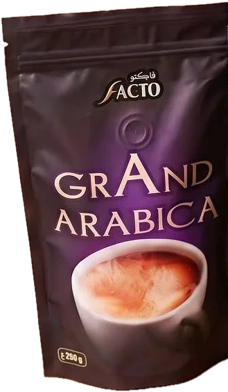
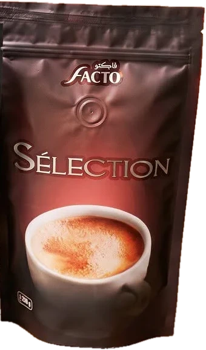
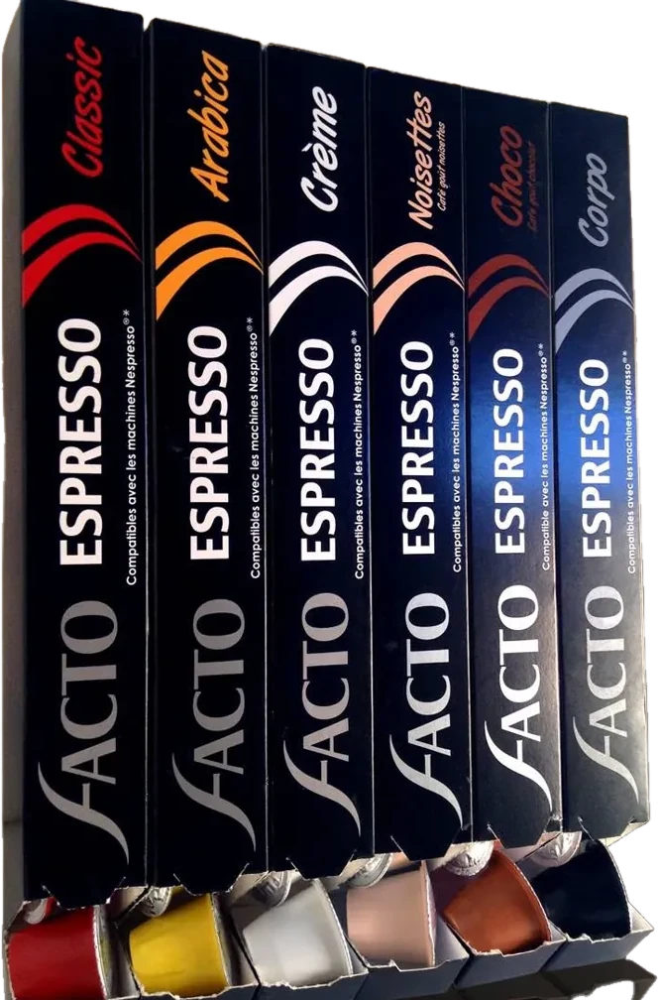

Nos produits
Trois cafés moulus, un thé vert et une gamme de capsules Espresso.

Grand Arabica
Notre café le plus délicat. Des grains 100 % Arabica torréfiés avec douceur pour une tasse ronde et parfumée, aux notes florales et à l'amertume légère.
| Grains | 100 % Arabica |
| Torréfaction | Moyenne |
| Profil | Doux, floral, rond |
| Intensité | |
| Préparation | Cafetière italienne, filtre |
| Format | Sachet refermable 250 g |

Sélection
L'assemblage signature de la maison. Sélection marie la finesse de l'Arabica et la force du Robusta pour un café équilibré qui plaît à toute la famille.
| Grains | Arabica & Robusta |
| Torréfaction | Médium |
| Profil | Équilibré, belle crème |
| Intensité | |
| Préparation | Cafetière italienne, cezve |
| Format | Sachet refermable 250 g |
Pure Robusta
Le plus intense de la gamme. Un Robusta pur, à la torréfaction poussée, pour une tasse dense et cacaotée, couronnée d'une crème généreuse.
| Grains | 100 % Robusta |
| Torréfaction | Poussée |
| Profil | Corsé, dense, cacaoté |
| Intensité | |
| Préparation | Cafetière italienne, espresso |
| Format | Sachet refermable 250 g |
Green Tea
Le thé vert Facto, dans son sachet kraft orné du voyageur du désert. À infuser dans la théière familiale et à servir avec de la menthe fraîche.
| Type | Thé vert |
| Profil | Frais, végétal |
| Préparation | Théière traditionnelle |
| Moment | Après le repas, en soirée |

Espresso
Six variétés en capsules pour retrouver le goût Facto en une pression : Classic, Arabica, Crème, Noisettes, Choco et Corpo.
| Format | Capsules |
| Variétés | Classic, Arabica, Crème, Noisettes, Choco, Corpo |
| Compatibilité | Machines Nespresso®* |
| Moment | À la maison comme au bureau |
* Nespresso est une marque de Société des Produits Nestlé S.A., sans lien avec Facto.
Commandes professionnelles & distribution
Tarifs revendeurs, grossistes et CHR sur demande.